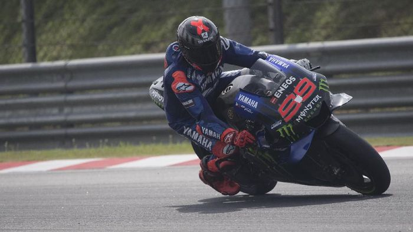

Berita Olahraga
Jorge Lorenzo Jadi Test Rider Aprilia?

Mallorca - Kabar mengejutkan datang dari MotoGP. Beredar kabar Jorge Lorenzo bakal menjadi test rider tim Aprilia. Benarkah?
Kabar itu dicetuskan Speedweek. Beredar laporan Lorenzo tengah bernegosiasi dengan Aprilia, untuk menjadi test rider di musim 2021. Saat ini, Lorenzo sendiri menjadi bagian dari tim Yamaha. Musim ini, juara dunia MotoGP tiga kali itu menjadi pebalap penguji tim Garpu Tala.Sebelumnya, Aprilia sendiri juga dikaitkan dengan 'Lorenzo'. Namun, Lorenzo-nya adalah Lorenzo Savadori, yang menggantikan Bradley Smith.Namun, ada laporan Aprilia juga mendekati Jorge Lorenzo. "Kami mendengar dari Spanyol jika negosiasi dengan Aprilia berjalan lancar, tapi kesepakatannya juga tetap bisa batal karena masalah uang," tulis Speedweek.
Selain Lorenzo, Aprilia juga dikaitkan dengan Andrea Dovizioso. Namun, negosiasinya juga masih belum jelas.
Jika jadi merekrut Lorenzo, maka kedua pihak akan bereuni. Sebab, pria asal Spanyol itu juga pernah membalap untuk Aprilia pada 2006-2007, tepat sebelum ke MotoGP.
Di 2020, Lorenzo sendiri cuma sempat menguji motor YZR-M1 di Sepang dan Portimao. Sisanya, rider 33 tahun itu belum lagi tampil.Kesempatan tampil dengan status wild card sempat diberikan Yamaha di MotoGP Catalunya, namun akhirnya dibatalkan akibat pandemi. Terakhir, Lorenzo juga tidak menjadi pebalap pengganti Valentino Rossi di Yamaha, yang sempat absen akibat positif virus corona. Jika jadi pindah, ada kabar posisi Lorenzo sebagai test rider Yamaha akan digantikan Dovizioso. Rider Italia itu juga dirumorkan dengan Yamaha, sebab bakal meninggalkan Ducati di akhir musim.
Bukan Pertama Kalinya Vinicius Disemprot Benzema

Moenchengladbach - Video Karim Benzema membicarakan Vinicius Junior beredar di dunia maya. Bukan pertama kalinya pemain Brasil itu kena semprot seniornya di Real Madrid.
Ada cerita menarik dari laga Borussia Moenchengladbach vs Real Madrid di Liga Champions, Rabu (28/10/2020) dini hari WIB. Benzema dan Ferland Mendy terlihat membicarakan Vinicius saat jeda pertandingan.
Vinicus sendiri sedianya berada di dekat Benzema dan Mendy, namun tidak menyadarinya. Dilansir Marca, rupanya bukan kali ini saja Benzema menegur Vinicius.
Beberapa waktu lalu, Vinicius mengaku sempat ditegur Benzema di lapangan. Ketika itu, saran eks penyerang Lyon dinilai ampuh.
"Setiap kali kami bermain bersama, dia menyuruh saya untuk berkonsentrasi dan santai. Saya ingat pertandingan derby melawan Atletico Madrid, ketika saya kehilangan bola dan itu berujung gol," kata Vinicius dalam wawancaranya baru-baru ini.
"Dia mengatakan kepada saya untuk bertukar posisi, sehingga saya akan lebih sedikit menyentuh bola dan mendapatkan lebih banyak kepercayaan diri dalam permainan. Dan itu berhasil," jelasnya.
Baca juga: Benzema Jelek-Jelekin Vinicius, Legenda Milan Ini Kaget
Di pertandingan melawan Gladbach, Madrid sendiri cuma ditahan imbang 2-2. Sempat ketinggalan lewat dua gol Marcus Thuram, Benzema dan Casemiro bisa memaksakan hasil imbang.
Hasil itu membuat Madrid belum menang dari dua pertandingan Grup B Liga Champions. Pasukan Zinedine Zidane baru meraih satu poin, dan terbenam di dasar grup.
Baca juga: Kekesalan Benzema sama Vinicius pun Terungkap Lewat Statistik
Presiden UFC Yakin Khabib Batal Pensiun karena Alasan Ini
Jakarta - Keputusan Khabib Nurmagomedov pensiun memang sudah terlontar. Tapi Presiden UFC Dana White masih percaya Khabib akan kembali bertarung, paling tidak satu kali lagi.
Akhir pekan lalu Khabib Nurmagomedov meraih kemenangan teranyarnya di arena MMA setelah mengalahkan Justin Gaethje lewat submission di ronde kedua dalam partai utama UFC 254.
Hasil tersebut membuat rekor Khabib Nurmagomedov di arena MMA, termasuk sebelum masuk UFC, menjadi 29-0. Ia lalu mengumumkan pensiun di atas arena usai meraih kemenangannya. Keputusan pensiun petarung asal Dagestan itu tak lepas dari telah berpulangnya sang ayah, Abdulmanap Nurmagomedov, pada bulan Juli lalu. Khabib tak yakin bisa kembali ke arena untuk satu laga berikutnya tanpa didampingi ayah tercinta di ring.
Sudah begitu, Khabib Nurmagomedov rupanya juga telah berjanji kepada sang ibunda bahwa laga lawan Justin Gaethje menjadi yang terakhir dalam karier profesionalnya. Sang ibu juga merasa kurang sreg jika putranya itu tarung lagi tanpa ditemani ayahnya.
Sontak pengumuman Khabib Nurmagomedov pensiun ini ramai menjadi pembahasan selama beberapa hari terakhir. Ada yang menyayangkan ia sudah pensiun pada usia yang baru 32 tahun dan sedang di puncak karier. Tapi di sisi lain tak sedikit pula yang memberikan dukungan sekaligus yakin Khabib takkan sembarangan mengambil keputusan karena sosoknya yang senantiasa konsisten dengan ucapan.
Baca juga: Khabib yang Suka Bicara ke Lawan Saat Lagi Baku Hantam
Sehubungan dengan itu, Dana White selaku presiden UFC mengungkap bahwa ia sudah membuka pembicaraan dengan pihak Khabib Nurmagomedov untuk menarik kembali keputusannya pensiun. Salah satunya adalah demi mengejar kemenangan ke-30. Kabarnya, mendiang ayah Khabib memang pernah memproyeksikan putranya itu agar bisa menggenapkan rekor kemenangannya jadi 30-0.
"Aku akan katakan ini kepadamu, dan aku belum bilang siapa-siapa soal ini, tapi Khabib dan aku sudah mulai bicara," kata White dalam acara Zach Gelb Show yang dikutip MMAFighting.com.
"Saat ia melewati pertarungan malam itu, ia benar-benar sarat dengan emosi. Aku punya perasaan, ia masih ingin untuk lanjut mengejar 30-0."
"Ya benar (aku berpikir ia akan kembali). Aku pikir ia takkan pensiun. Ayahnya menginginkan dirinya sampai ke 30-0 dan aku pikir ia ingin menghormati wasiat sang ayah," tutur Dana White soal keyakinan Khabib Nurmagomedov mencabut keputusan pensiunnya dan tarung lagi di UFC.